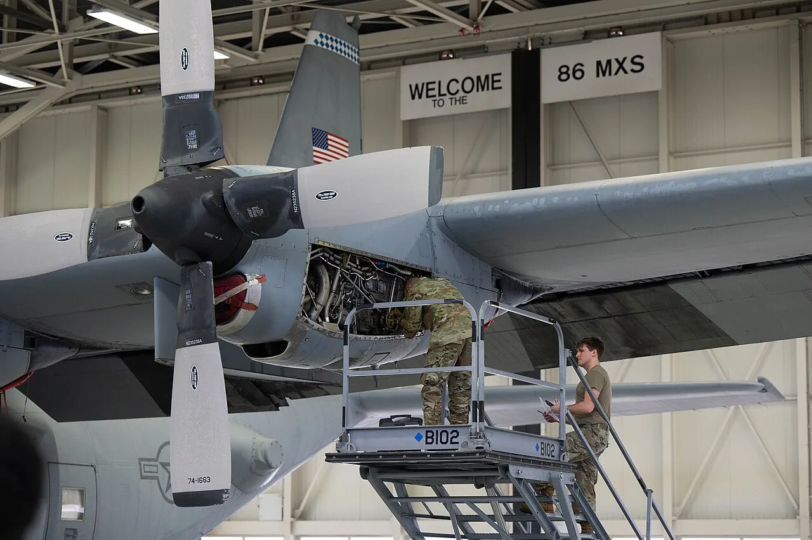

비행기는 있어도 엔진이 묶입니다

항공 수요가 회복되면 사람들은 먼저 항공권 가격을 봅니다. 하지만 산업 안쪽에서 더 중요한 숫자는 엔진이 정비소에 머무는 시간입니다. 엔진 점검과 부품 교체가 늦어지면 항공사는 비행기를 갖고 있어도 운항하지 못합니다. 새 항공기 인도 지연과 별개로 기존 항공기의 가동률이 떨어지는 문제가 생깁니다.
엔진 MRO 병목은 단순한 정비 일정 문제가 아닙니다. 고온·고압 환경에서 버티는 부품, 숙련 정비사, 인증된 수리 절차, 원제작사의 기술 문서 접근권이 함께 필요합니다. 어느 하나만 부족해도 대기열은 길어집니다. 항공사는 예비 엔진을 빌리고, 노선 계획을 줄이고, 수익성이 낮은 운항을 미루는 방식으로 대응합니다.
리스 비용은 조용히 운임에 들어갑니다
엔진 정비 기간이 길어지면 항공사는 예비 엔진을 더 많이 빌려야 합니다. 수요가 몰리면 엔진 리스료가 오르고, 그 비용은 항공권 가격과 부가 서비스 가격에 천천히 반영됩니다. 소비자는 유가와 환율을 운임 상승의 이유로 먼저 떠올리지만, 실제로는 정비 대기와 부품 부족이 좌석 공급을 줄이는 경우도 많습니다.
이 병목은 저비용항공사에 더 부담입니다. 대형 항공사는 장기 계약과 자체 정비 네트워크로 버틸 여지가 있지만, 작은 항공사는 예비기와 예비 엔진이 부족합니다. 운항률이 떨어지면 고정비 부담이 커지고, 인기 노선에 기재를 몰아야 합니다. 그래서 MRO 병목은 항공사 간 수익성 격차를 벌리는 요인이 됩니다.
부품은 공장보다 인증에서 막힙니다
항공 부품은 아무 공장에서나 만들어 바로 쓸 수 없습니다. 소재, 가공, 검사, 인증, 추적 기록이 모두 맞아야 합니다. 공급망이 흔들릴 때 항공 부품 부족이 오래가는 이유입니다. 일반 제조업처럼 대체 공급처를 빠르게 늘리기 어렵고, 승인된 부품이라도 정비 현장에서 사용할 수 있는 문서와 절차가 필요합니다.
IATA가 항공 공급망 병목을 계속 지적하는 배경도 여기에 있습니다. 항공사는 새 기체를 기다리는 동시에 기존 기체를 더 오래 굴려야 하고, 그만큼 정비 수요는 늘어납니다. 하지만 정비 능력이 같은 속도로 늘지 않으면 대기 시간이 다시 길어집니다. 수요 회복이 공급망을 더 압박하는 구조입니다.
MRO 투자는 사람과 문서의 사업입니다
MRO 산업을 성장 산업으로 볼 때는 격납고 면적보다 인력과 인증을 먼저 봐야 합니다. 숙련 정비사를 키우는 데 시간이 걸리고, 엔진별 수리 권한과 매뉴얼 접근권도 중요합니다. 좋은 위치의 정비 시설을 지어도 원제작사와의 관계, 항공당국 인증, 부품 조달 능력이 없으면 가동률을 높이기 어렵습니다.
산업적으로는 기회가 분명합니다. 항공 수요는 쉽게 사라지지 않고, 친환경 항공기 전환이 늦어질수록 기존 기체 정비 수요는 더 길어집니다. 다만 투자자는 “정비 수요가 많다”에서 멈추지 말고 어느 회사가 엔진, 부품, 인력, 인증을 함께 확보했는지 봐야 합니다. 항공 정비의 이익은 바쁜 공항이 아니라 줄어드는 대기 시간에서 나옵니다.
부품 한 개가 노선표를 바꿉니다
항공 정비 병목은 겉으로 보기에 승객과 멀어 보이지만 실제로는 운항표에 바로 닿습니다. 엔진을 내려 정비소에 보내면 항공사는 예비 엔진을 끼우거나 기체를 세워야 합니다. 예비 엔진이 부족하면 운항 가능한 항공기가 줄고, 성수기에는 그 부족이 항공권 가격과 결항 위험으로 이어집니다.
문제는 정비 수요가 일시적으로 몰렸다는 데 있습니다. 팬데믹 동안 운항이 줄었다가 여행 수요가 빠르게 회복되면서 기체 사용 시간이 다시 늘었습니다. 여기에 신형 엔진의 검사 이슈와 소재 공급 차질이 겹치면 정비 예약이 길어집니다. 항공사는 항공기를 샀는데도 계획한 만큼 띄우지 못하는 상황을 겪습니다.
정비 업체에는 기회입니다. 엔진 수리, 부품 교체, 검사 장비, 숙련 인력의 가치가 올라갑니다. 그러나 정비 사업도 빨리 늘리기 어렵습니다. 항공기 정비는 인증과 품질 관리가 까다롭고, 실수 한 번이 안전 문제로 이어질 수 있습니다. 공장을 늘리는 것보다 숙련 인력과 승인 절차를 확보하는 시간이 더 오래 걸립니다.
항공사 재무에는 두 가지 부담이 동시에 옵니다. 한쪽에서는 여행 수요가 좋아 매출을 늘릴 수 있지만, 다른 한쪽에서는 정비비와 리스비, 지연 보상, 대체 운항 비용이 커집니다. 특히 저비용항공사는 항공기 가동률이 수익성의 핵심이라, 한 대가 오래 멈추면 수익 계획이 크게 흔들립니다.
앞으로 볼 것은 주문 잔고보다 실제 가동률입니다. 엔진 정비 대기 기간, 예비 엔진 확보량, 정비 슬롯 가격, 항공사의 결항률과 지연률을 함께 봐야 합니다. 항공 산업의 회복은 승객 수만으로 완성되지 않습니다. 보이지 않는 정비소의 병목이 풀려야 노선 확대도 오래 갈 수 있습니다.
관련 영상
항공 정비 사업, 황금알 낳는 거위 기대 / YTN
항공권 가격을 읽을 때 유가만 보면 절반만 보는 셈입니다. 엔진 정비 대기, 예비 엔진 리스료, 부품 인증, 정비사 수급이 좌석 공급을 결정하고, 좌석 공급이 결국 운임을 움직입니다.
항공 산업을 볼 때는 예약률과 운임만으로 판단하기 쉽지만, 지금은 정비 대기 시간이 숨은 변수입니다. 엔진을 제때 돌려받지 못하면 항공사는 새 노선을 열어도 공급을 늘리지 못하고, 승객은 선택지가 줄어듭니다. 정비 업체에는 가격 협상력이 생기지만, 안전과 품질 기준 때문에 아무나 빠르게 시장에 들어올 수 없습니다. 그래서 이 분야의 핵심 숫자는 승객 수, 항공권 가격, 항공기 인도량이 아니라 엔진 정비 소요 기간과 예비 엔진 확보율입니다. 그 숫자가 줄어들어야 항공사의 회복도 실제 이익으로 연결됩니다.
정비 병목이 길어지면 항공사는 수익성 높은 노선부터 지키고, 낮은 수익 노선은 줄일 수 있습니다. 지방 공항이나 계절 노선이 먼저 영향을 받을 가능성이 있습니다. 여행객이 체감하는 변화는 항공권 가격뿐 아니라 원하는 시간대의 좌석이 줄어드는 방식으로 나타납니다. 항공주를 보거나 여행 계획을 세울 때도 정비 이슈를 단순한 업계 뉴스로 넘기기 어렵습니다. 하늘 위 공급은 격납고 안의 일정표에 묶여 있습니다.
정비 대기열이 줄어들면 항공사는 비로소 좌석 공급을 안정적으로 늘릴 수 있습니다. 그 전까지 항공 산업의 회복은 공항의 붐비는 모습보다 정비소의 처리 속도에 더 크게 좌우됩니다.